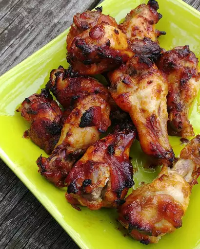

Teriyaki Chicken Wings

Description
These delicious teriyaki chicken wings are a fantastic meal that can be done on weeknights and weekends. Serve with homemade chips or on their own. An oven shelf with a wire rack is needed for best results.
Ingredients
- 3 tablespoons oil
- 1 kg of chicken wings
- 2 cubes of chicken stock powder, crushed
- 1 teaspoon of paprika
- 1 teaspoon of chinese 5 spice
- ½ teaspoon ground black pepper
- ½ teaspoon of cayenne pepper
- 1 teaspoon of garlic granules
- 1 jar of teryaki sauce
- 1 teaspoon of MSG
- 3 teaspoons of seasame seeds
- 2 teaspoons of honey
- 3 teaspoons of dark soy sauce
Directions
-
If the chiecken wings are whole, cut them into wings and drumettes and remove the tip.
-
Season with garam masala, cumin, turmeric, salt, and chile flakes. Add spinach right before serving.
-
Mix the Chicken stock powder, paprkia, chinese 5 spice, pepper, cayenne pepper, and garlic granules into a bowl.
-
In a large bowl add all the wings and drumettes and mix with a glug of oil, when everything is coated, tip in the bowl of mixed spices and mix until all wings are coated evenly. Leave to marinate.
-
When the wings have been marinated, pre-heat your oven to 200 degrees. Add oil to a frying pan and fry each wing until the skin is crispy on both sides.
-
When the skin is crispy, transfer to an oven shelf with a wire rack and cook in the middle if the oven for 20-25 mins or until the wing reacher and internal temperature of 75 degrees. The wire rack will keep the wings from cooking in fat which will keep the skin crispy as they cook.
-
While the wings cook, wipe any excess fat off the frying pan and toast the seasame seeds on a low heat to enhace their flavour.
-
After 1 minute add in the theryaki sauce, honey, soy sauce and MSG. As soon as the sauce starts to bubble slightly turn off the heat.
-
When the wings are cooked remove from the oven and toss them in the teryaki sauce. Job Done.